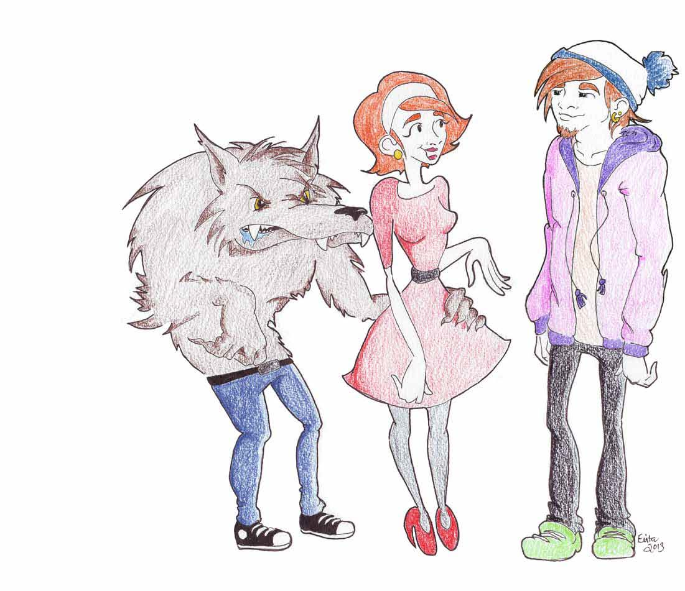

Tankene som ødelegger forholdet.
TEKST: Ingrid Anna Teigen
ingrite@underdusken.no
ILUS: Evita Lill Bergstad

De fleste har på et eller annet tidspunkt
vært nødt til å forholde seg til
sjalusi. Det kan være vondt, men kan
også tolkes som et uttrykk for kjærlighet
og engasjement. Sånn sett har
sjalusi en naturlig plass i et forhold,
og man må kunne akseptere en viss
grad av mistenksomhet. I stedet for å
se på det som kontrollbehov, kan man
heller ta det som en bekreftelse på at
partneren bryr seg om forholdet, og
er engstelig for at noe, eller noen, skal
ødelegge det.
Det er i det øyeblikket den trygge sjalusien
tar form som en besettelse at det
blir et problem. Slik mistenksomhet
vil, når den er ubegrunnet, gå utover
livskvaliteten til begge parter, og i seg
bli en årsak til brudd.
Se og hør
Det er litt lettvint å si at det er den
som er sjalu som har et problem, og
at vedkommende bare må lære seg å
håndtere de ubehagelige tankene. Ofte
beror sjalusien på en generell følelse
av utrygghet og dårlig selvbilde. Snakk
med partneren din og forsøk å komme
til bunns i hva sjalusien kommer av.
La han beskrive hvordan han opplever
situasjonen og fortell samtidig hvordan
det er for deg.
De som sliter med lav selvtillit vil mye
lettere kunne oppleve en situasjon som
truende. Følelsen av at man blir sett,
og er attraktiv for partneren sin, vil
kunne hjelpe på dette. Skap trygghet
og gi positiv tilbakemelding på at det
er dette du vil.
Skam
De færreste er stolte av sjalusien sin. Ofte
vet man at den egentlig er ubegrunnet
og ødeleggende, men klarer likevel ikke
å legge den fra seg. Denne skamfølelsen
kan gjøre det vanskelig å være ærlig,
både overfor seg selv og partneren.
Det kan hjelpe å spørre seg selv om man
har rett til å være sjalu. Ta et steg tilbake,
og gå igjennom det som har skjedd.
Overreagerer du, eller har partneren
din gitt deg grunn til bekymring? Når
du har analysert situasjonen, og kommet
fram til hva som er vanskelig for deg,
kan du drøfte det med partneren din.
Det samme gjelder egentlig for den som
blir utsatt for sjalusi. Tenk over om det
er noe med oppførselen din som gir
grobunn for mistenksomhet. Om du
ikke har noe å skjule, og føler at sjalusien
ikke har rot i virkeligheten, bør du
konfrontere partneren din med dette.
Brent barn skyr ilden
Dersom man først har opplevd å bli
bedratt, kan det bli vanskelig å stole på
noen andre etterpå. Hvis man nærmest
forventer at det samme skal skje igjen
med en ny partner, sier det seg selv at
også det nye forholdet vil bli anstrengt
og angstfylt.
Å være den nye partneren i denne situasjonen
kan være sårt, fordi man på sett
og vis må betale for noe noen andre har
gjort. I et følelsesmessig forpliktende
forhold må man stole på hverandre.
Dette innebærer naturligvis en risiko
for å bli lurt igjen, men tør man ikke ta
den sjansen, vil man heller aldri fungere
i et nytt forhold.
Ikke tabu, ikke tema
For å komme tilbake til utgangspunktet:
Å gjøre eksen til et tabutema er lite
konstruktivt. Tidligere forhold, selv om
de har tatt slutt, har mest sannsynlig gitt
deg erfaringer som har vært positive for
deg. Det er raskt å glemme at nettopp
disse erfaringene også har vært med å
forme deg til den personen du er i dag,
og som kjæresten din har forelsket seg i
og valgt å gå inn i et forhold med.
Med fare for å motsi meg selv, er det
heller ikke nødvendig å brette ut i det
vide og brede om tidligere partnere. Den
åpenheten kan man måtte betale dyrt
for i form av sjalusi på sikt. I tillegg er
det verdt å komme på at du snakker
om en tredjepart, som faktisk ikke har
noe med deres forhold å gjøre, og som
trolig ikke vil sette pris på på å bli utlevert
på en slik måte.
Takk til innsenderen for inspirasjon til
teksten. En gave fra Under Dusken og
vår samarbeidspartner Cecilie Kjensli
er på vei i posten.